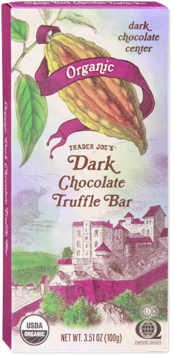
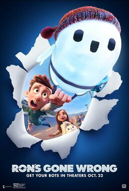
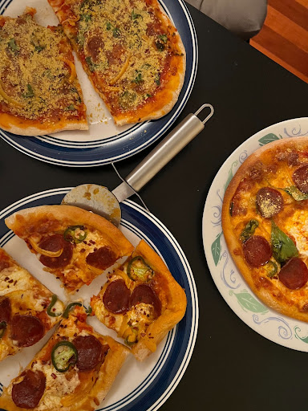
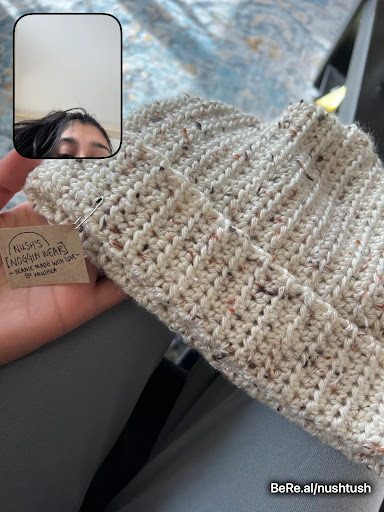

Monday, February 6th
I’ve debated starting a podcast with a close friend for the past several years. After texting social commentary back and forth (that I believe qualifies as a cross between the most hilarious shit you’ve ever heard and deeply concerning opinions that likely dictate some kind of mental evaluation is long overdue), I decided that these thoughts might be better suited in a blog.
After contemplating starting a blog for what feels like several years, I am starting with a more simple post. This idea is stolen from one of my favorite bloggers - Haley Nahman, who does a weekly ‘15 things I consumed this week’ on Maybe Baby. Her 15 things have ranged from funny tik toks to great meals recommendations to interesting books reviews. Anything and everything is on the table for consumption. And so, without further ado - here are 10 things I consumed this week (I could not muster up 5 more):
- This hilariously accurate tweet on how best friends talk to each other that I immediately shared with everyone I text on a regular basis.
- This Verge article about Getty suing Stability AI, the creator of the AI art tool- Stable Diffusion. The AI tools made available to the public today use the work of artists and other creators in ways beyond what “fair use” laws considered. Law often trails technological advancements and needs to adapt. The advancements being made in AI are very exciting but also make this conversation a necessary one. This article is also increasingly relevant with how popular AI tools like DALL-E, Lensa AI, Midjourney, and Chat GPT have become.
- This dark truffle chocolate bar from Trader Joe’s that a friend reassured me would “slap” and I can confirm that it did in fact “slap”. 
- Duolingo Friend Quests- I started learning Spanish this month for no good reason- the hype around Duo Lingo sucked me in and the over the top gamification on the app keeps me coming back. This app will transport you back to the magic of learning that you experienced in your pre-teen years. I am most engaged with Friend Quests- a language challenge you complete with a Duolingo friend connection that you have been randomly paired with. Since I started my daily lessons I have had to use two of my “streak freezes” to prevent losing my 31 day streak on the app. If I had a friend quest challenge during those days, I can guarantee I wouldn’t have missed them.
- The Likeness by Tana French. I am easily captivated by mystery/thriller novels and so it’s unsurprising that I ran through this book in less than a week. While complaining about the convenience of certain plot lines to anyone who would ask me what I am reading, I was also extremely emotionally invested in all of the characters' story lines. I gave this book a rating of ⅗ stars on Goodreads but star ratings are a really useless rating system unless the stars awarded is 1 or 5 stars. In summary, this book was very engaging. Read it if you care.
- This very controversial article about fat shaming that I am currently debating with a friend. The advice forum post addresses a user asking whether they are an asshole for sharing their honest opinion about their partner's long term weight gain. The response is harsh- it claims that the asker deserves to be dumped and that they handled the situation selfishly. While there are some valid points, I can’t help but feel it is far too biased to be fair feedback. The interaction opens up a lot of interesting questions about honesty and placating others in a relationship. Is this person an asshole? Please read and weigh in.
- This lawsuit against Google (one of many at this point). Unlike several others, I did not see this one wildly advertised by the media. A white male google employee is sexually harassed by an asian female director on multiple occasions. Formal complaints filed against the harasser are ignored and the victim is told that if the situation was reversed, it would likely be escalated. After some time the male employee is fired based on complaints filed by the same woman who harassed him on grounds that he is not an inclusive team lead. The situation is a disappointing and disturbing one that is honestly another example of why DEI initiatives in large corporations cannot be taken seriously (in my opinion).
- The movie Ron’s Gone Wrong. It was released in 2021 and after seeing how good it is- I am flabbergasted that I haven’t heard about it till now. It was produced by a subdivision of Disney, 20th Century Studios but does not have the tag or hype attached to it. It is one of the best movies I’ve seen in the past year and also one of the most relevant for young adults. Despite being animated, this movie could not feel more real. You can’t help but relate to the main character Barney, a middle schooler struggling to make friends in a world where people are more attached to their online experience than their in person one. I laughed, I cried, and I watched this movie twice in one weekend just to make other people watch it too. Unclear if this is recency bias but this is the best movie I have seen in the past year. 
- Nutritional yeast- I brought home a bag of this magic from my parents house because it was going unused. I believe it is used as a substitution for cheese (parmesan specifically maybe). Eight grams of protein for two tablespoons of yeast!!! Note: I am lactose intolerant so this is all the hype. Below is a picture of my work of art next to two ‘conventionally’ good looking pizzas: 
- This youtube tutorial for crocheting a beanie. In the constant pursuit of wanting to have fun and interesting hobbies (that do not involve screens), I picked up crocheting a few months ago. While it can be tedious, having a finished product at the end (almost) always makes it worth it. 